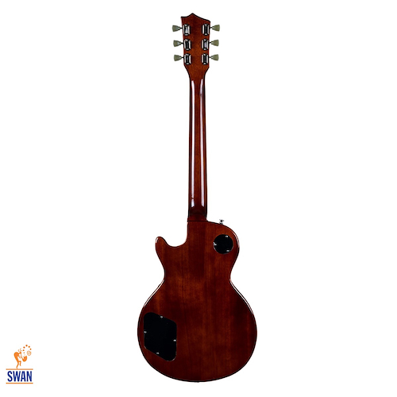
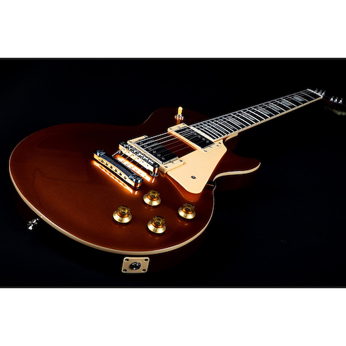
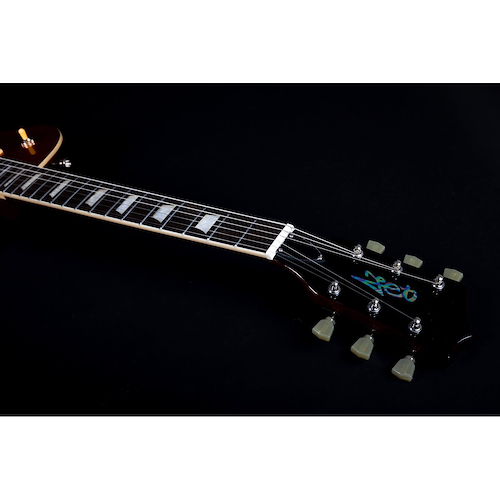
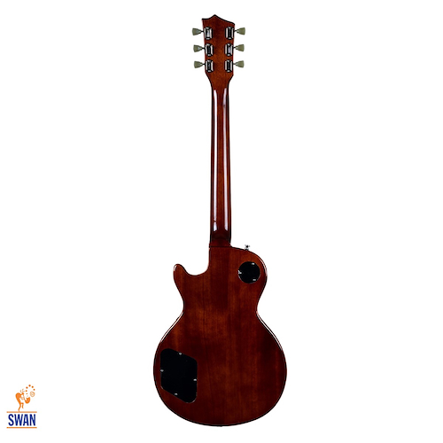
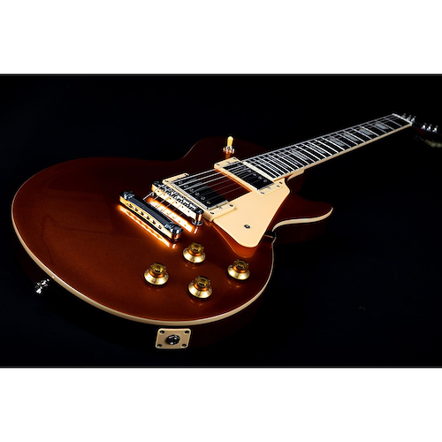
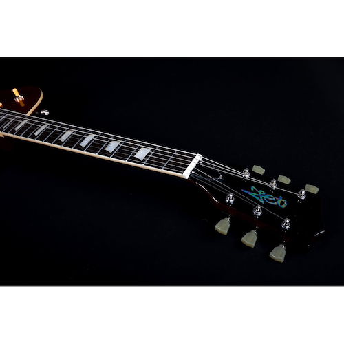

Guitarra eléctrica Jet Guitars JL500 GD Les Paul
SKU: JET-JL500GD
-13% OFF
$750.000
$600.000 con transferencia o depósito
INFORMACION DEL PRODUCTO
JET Guitars es una nueva marca de guitarras eléctricas creada para el disfrute de músicos de todos los niveles y habilidades. Inspiradas en las clásicas guitarras de alta gama, las guitarras JET ofrecen un enfoque moderno en diseño y estilo, con una emocionante y fresca selección de colores, acabados y maderas de alta calidad. Lo más importante es que las guitarras JET ofrecen una experiencia premium a un precio accesible.
La Jet Guitars JL-500 Rosewood eléctrica es una guitarra que presume de una sensación increíblemente satisfactoria y un sonido sumamente dinámico. Sus dos pastillas humbucker de alnico ofrecen un golpe sónico poderoso que es perfecto para obtener un sonido grueso y agresivo con ganancia. Sin embargo, también son muy dinámicas y pueden manejar cualquier género musical que les presentes. Tendrás mucha estabilidad de afinación gracias al puente stoptail, que mejora la resonancia y ayuda a mantener tus cuerdas firmemente en su lugar. Finalmente, el mástil de diseño Modern C facilita un toque suave y un fácil acceso a todos los trastes. Es perfecta para cualquier guitarrista.
Potencia dual de las pastillas humbucker
Proyecta tus riffs con fuerza. Gracias al par de potentes pastillas humbucker de esta guitarra, podrás aumentar considerablemente tu sonido y crear un impacto serio. Imagina a tu audiencia siendo golpeada por una pared de maravillas sónicas. Estas pastillas funcionan especialmente bien con ganancia, eliminando cualquier ruido y ayudando a impulsar tu amplificador al máximo. Espera obtener graves ricos y profundos con la pastilla del mástil, mientras que la del puente ofrece un medio nítido y mordaz que se destaca en la mezcla.
ESPECIFICACIONES
Mástil y Diapasón
Material del mástil: Caoba Perfil del mástil: 'Modern C' Longitud de escala: 24.75 pulgadas Diapasón: Palisandro Trastes: 22 medianos Jumbo, ancho de 2.7mm Material del traste: Níquel
Hardware y electrónica
Ceja de las cuerdas: Simil Hueso Ancho de la cejuela: 1.65 pulgadas Marcadores de posición: Trapezoidales blancos Pastilla del puente: Alnico Humbucker Pastilla del mástil: Alnico Humbucker Controles: 2V (volumen), 2T (tono), Selector de 3 posiciones Acabado del hardware: Cromo Clavijeros: Cromo Golpeador: Blanco Perillas de control: Doradas Peso: 3,5 Kg